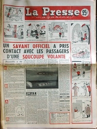

La Presse Magazine n° 401 du 14, titrant : Un savant officiel a pris contact avec les
passagers d'une soucoupe volante

(Date approximative) 2 A Villares des Saz (Espagne), quand un léger sifflement attira son attention, Maximo Munos
Olivarès (garçon vacher illettré, 14 ans), voit un gros ballon sur le sol derrière lui. Il est métallique et
il a la forme d'un pot à eau. Par une ouverture sortent 3 nains de 60 cm de haut, la face jaune, les yeux étroits et
des traits orientaux. Ils parlent un langage que l'enfant ne peut pas comprendre. Ils sont habillés de bleu, ont une
sorte de chapeau plat avec une visière sur le front et une feuille de métal sur les bras. L'un d'eux embrasse le
garçon, puis ils rentrent dans l'engin qui brille intensément ; émettant un doux sifflement il part comme une
fusée. Des empreintes de pieds et 4 trous de 5 cm de profondeur formant un carré parfait de 46 cm de côté sont
trouvés par la police Bowen, Charles: Humanoids 29.
Selon certaines sources, supposée récupération de 5 corps suite à un crash qui aurait eu lieu à Johofnisburg (Afrique du Sud).
Une voiture
mystérieuse reste garée près du domicile du président de l'Australian Flying Saucer Bureau, qui a vécu
des poltergeist Bender: Flying Saucers, p. 65Barker: They Knew Too Much, pp. 162-162 < Medway, Gareth J.: "Men in Black Encounters, a Short Catalogue", Magonia.
Fin de la guerre de Corée.
A Wolin (Pologne), 1 objet métallique de 30 m de
diamètre est observé par 5 polonais et 2 travailleurs allemands, alors qu'il atterrit dans un champ tout près d'une
voie de chemin de fer. Il ressemble à une sphère avec un disque plat autour, montrant plusieurs ouvertures sur sa
périphérie Intelligence Digest, novembre 1953Vallée, Jacques: Passport to Magonia.